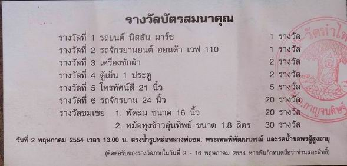

|
ด้วย
ในงานสรงน้ำ-ปิดทอง หลวงพ่อ ประจำปี ๒๕๕๔ คณะศิษยานุศิษย์วัดท่าไทร
ผู้ร่วมกันจัดงาน ได้มอบ "บัตรสมนาคุณ แทนใบเสร็จรับเงินและแทนใบอนุโมทนาบัตร"
แก่ผู้ที่ร่วมบริจาคสนับสนุนการจัดงาน แล้วนำหางบัตรนั้นมาจับ
เพื่อมอบรางวัลให้แก่ผู้บริจาคอีกครั้งหนึ่ง เป็นของเสริมหลังจากที่ได้บุญแล้ว
โดยสิ่งของรางวัลที่นำมามอนให้นี้ ส่วนหนึ่งได้จากคณะศิษยานุศิษย์วัดท่าไทร
ได้บริจาคมาเพื่อมอบให้แก่ผู้มาร่วมทำบุญ ตามกำลังศรัทธา (ผู้บริจาคมาก
ก็จะได้บัตรหลายใบ โดยคิดราคา ๒๐๐ บาท/๑ บัตร) สืบสานประเพณีวัฒนธรรมท้องถิ่น
เพื่อให้คงอยู่ตลอดไป
ในปีนี้ ได้ทำการจับหางบัตรแล้ว เมื่อเวลา ๒๓.๐๐ น.
ของวันที่ ๑ พฤษภาคม ๒๕๕๔ ที่ผ่านมา เพื่อเป็นการสะดวก จึงนำข้อมูลหางบัตรมาขึ้นไว้
เพื่อให้ผู่ที่ถือบัตรสมนาคุณได้ดู หากตรงกับเลขที่บัตรของตนเอง
ขอให้ติดต่อขอรับของรางวัลได้ที่ สำนักงานเทศบาลตำบลท่าทองใหม่
โทร. ๐-๗๗๒๒-๗๗๑๖ ภายในวันที่ ๒-๑๖ พฤษภาคม ๒๕๕๔ นี้ หากพ้นกำหนดถือว่าท่านสละสิทธิ์และคณะผู้ดำเนินการ
จะได้นำสิ่งของรางวัลที่เหลือไปถวายวัดท่าไทรต่อไป (เฉพาะรางวัลใหญ่
คณะศิษยานุศิษย์วัดท่าไทรในฐานะผู้ดำเนินการ ได้โทรศัพท์ให้ผู้ได้รับรางวัลมารับของรางวัลไปเป็นที่เรียบร้อยแล้ว)
.

โปรดคลิ๊กข้างล่างเพื่อดู
หมายเลขหางบัตรสมนาคุณรางวัลที่
๑-๖
หมายเลขหางบัตรสมนาคุณรางวัลชมเชย
และรางวัลพิเศษ

กลับไปหน้า
Web วัดท่าไทร
ไป Web สำนักงานเจ้าคณะภาค
๑๖
ไป
Web ศูนย์พัฒนาคุณธรรมภาคใต้
ไป
Web วิทยุชุมชนตำบลท่าทองใหม่
ไป Web ชมรมวีอาร์ร้อยเกาะสุราษฎร์ธานี
|